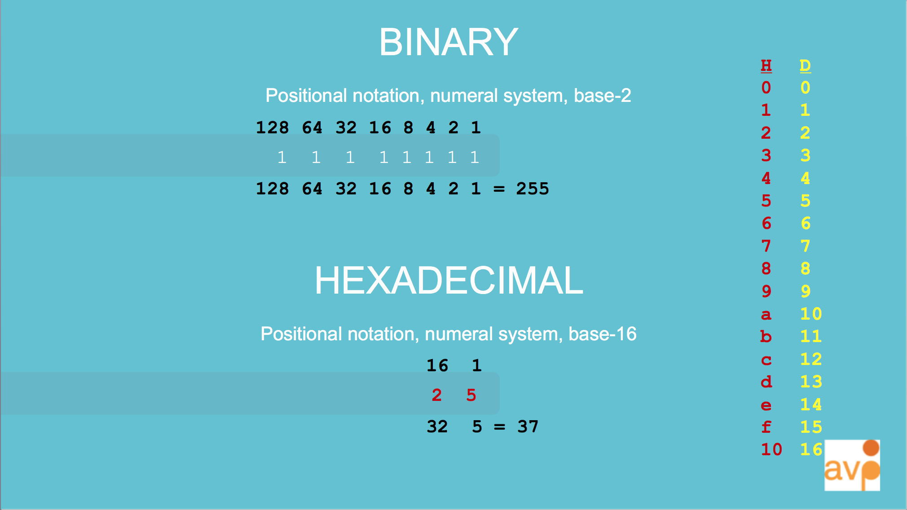

AIC 2017 Report
Electronic Media Specialty Sessions
AIC 2017 Report
Electronic Media Specialty Sessions
AIC 2017 Report
Electronic Media Specialty Sessions
AIC 2017 Report
Electronic Media Specialty Sessions
Digital Collection Objects Workshop
The Willful Marionette
Lilla LoCurto and Bill Outcault
Ariel O’Connor, Objects Conservator, Smithsonian American Art Museum
Daniel Finn, Media Conservator, Smithsonian American Art Museum
Digital Preservation Actions as Interventive Conservation Treatments at the Smithsonian
Crystal Sanchez, Video and Digital Preservation Specialist (Digital Asset Management System) - Smithsonian Institution
Briana Feston-Brunet, Conservator of Sculpture and Variable Media, Hirshhorn Museum and Sculpture Garden
EMG 20th Anniversary Panel
Moderated by Peter Oleksik
Panelists:
Christine Frohnert, Paul Messier, Glenn Wharton, Crystal Sanchez
Obsolescent Technology: The viability of the cathode ray tube used in art
Sara Moy, Project Conservator, The Art Institute of Chicago
Raphaele Shirley, Light artist and composer
Framing The Jones Buffer:
Documenting the History and Preservation of an Iconic Image-Processing Tool
Athena Christa Holbrook, Collection Specialist, Dept of Media and Performance Art, MoMA
(Not) Freaking Out Over the Videofreex: Preserving a Video Collective Archive
Tom Colley, Archive and Collection Manager, Video Data Bank
Kristin McDonough, Digitization Specialist, Video Data Bank
New Research and Developments in the Conservation of Computer-based Art
Joanna Phillips, Conservator, Time-based Media, Guggenheim
Deena Engel, Director of Digital Humanities and Social Science, NYU
Establishing a workflow for the preservation of software-based artworks
Patricia Falco, Time-Based Media Conservator, Tate
Klaus Reichert, Researcher, University of Freiburg
The David Wojnarowicz Knowledge Base:
A Wiki-based Solution for Conservation and Exhibition Documentation
Glenn Wharton, Museum Studies Professor, NYU
Deena Engel, Director of Digital Humanities and Social Science, NYU
Do You Hear What I Hear?
Documentation and Assessment of Aural Elements in Media Installation Art
Amy Brost, Andrew W. Mellon Fellow in Media Conservation, MoMA